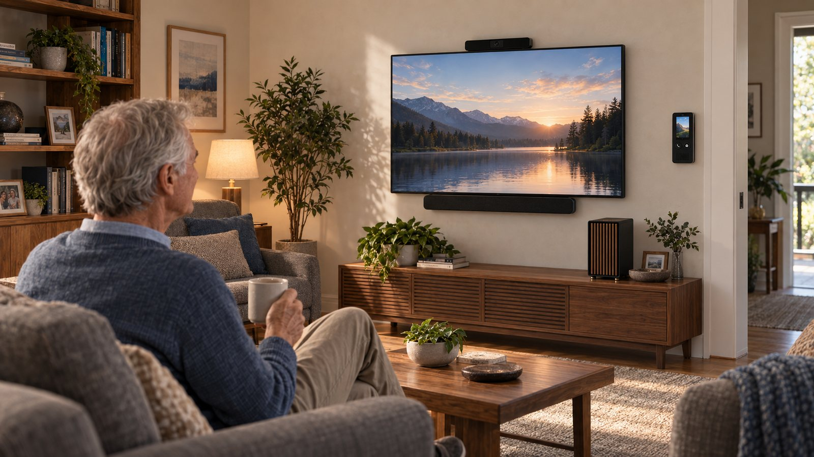

Story One · Ron and Maya at Home
Introduction
Introduction
Download chapterRon and Maya at Home
Download full storyMore and more families are living in the squeeze between generations. In the United States, 61.2 million people are now 65 or older. Sixty-three million Americans provided ongoing care in the past year. And about three quarters of adults over 50 say they want to stay in their own homes and communities as they age. That is the life families are trying to protect.
And too often, the thing that threatens that life is not what people expect.
It is not always a fall. It is not always a major physical event. Many physical limitations can be worked around for years.
Very often, the breaking point is memory.
It begins as ordinary friction. Repeated questions. Missed reminders. Confusion about appointments, medications, rides, and routines. Then the stakes rise. A stove left on. A door left open all night. A moment of confusion that did not become a disaster, but easily could have. Those moments accumulate until the family ends up facing the conversation it has been trying not to have.
A family meeting. A hard question. Dad needs more help. He is not safe on his own anymore.
Can we carry the cost of full-time support at home? Or is it time to talk about liquidating assets and moving him into a managed-care facility?
It is a heartbreaking conversation. One no family wants to have. One families try to put off as long as possible, even as the primary caregivers are already drowning.
And there is no shame in what is happening.
All of us already use modern tools to augment our memory. We rely on calendars, phones, reminders, notes, photos, texts, and search to hold the things our brains would otherwise drop. External memory is already part of modern life. But that stack is fragmented, reactive, and often too complex for an aging mind that came to technology later and now needs support from it more than ever.
At first glance, that might sound like a problem a smart speaker should be able to solve. But in the moment that matters, the whole model is almost absurd: a man waking up confused about what day it is is somehow supposed to understand that AI exists, that he owns an embodied AI device, that it is sitting on his counter, what the wake word is, and that if he asks the right question in the right way, it can tell him the date. In that moment, he would be better served by a large clock he sees the second he walks into the kitchen, because the information is brought to him at the exact moment of confusion. That is Livonne’s founding philosophy.
It has to live in the home like a patient, always-available assistant: noticing confusion, helping with orientation, repeating what needs to be repeated, surfacing what matters at the right time, and absorbing the thousand small moments before they become a bigger problem.
With today’s technology, there is a better way to support memory, orientation, coordination, and daily life before the situation becomes irreversible.
To show what that looks like, step into the life of someone living in the sandwich generation.
Someone like Maya.